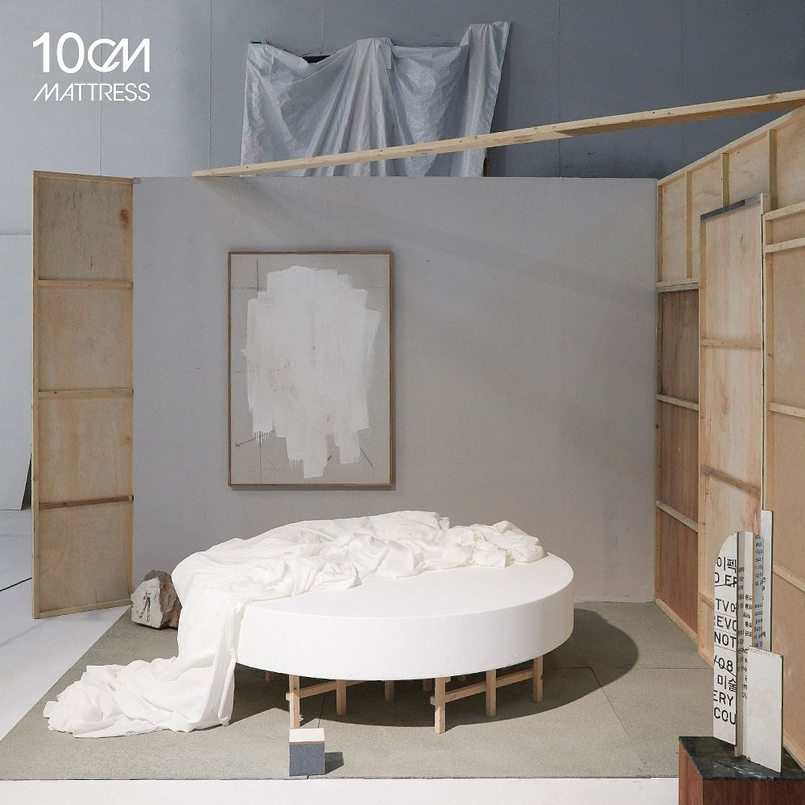

앨범명
4.1
발매일
2018.08.23
오늘밤 너는 나와 이불 속에 들어가
아무것도 하지 말고
그냥 바라보다가
웃음을 참지 못하고
먼저 깜빡인 사람
그사람이 졌으니까
마실 것 좀 가져와
새로 산 침대와
그 속의 우리가
세상의 전부인 거라면
그럼 우린 나갈 필요 없으니까
난 어설픈 말장난을 좀 해보려다가
어느새 잠든 너의 얼굴이 뚫어져라
괜히 감동 하고 있어
굳이 말로 하지 않아도
자꾸만 나도 모르게
이불을 끌어 오는
이유는 모르겠지만
다신 그러지 않을게
눈 앞에 계속 있어줘
내가 귀찮을 만큼
다리 올려놔도 좋아
내겐 가벼우니까
새로 산 침대와
그 속의 우리가
세상의 전부인 것처럼
그럼 우린 잠들 수도 없으니까
난 어설픈 말장난을 또 해보려다가
그새 또 잠든 너의 얼굴이 뚫어져라
다시 감동하고 있어
굳이 말로 하지 않아도
난 이러고 계속 있어도 되는 걸까
넌 또다른 많은 밤들을
나와 있어 줄까
제발 날 보고 또 웃어
굳이 말로 하지 않아도
오늘은 내가 유난히
말이 많은 것 같아
몰라 같이 있으니까
괜히 들떠있나봐
뒤에서 날 꼭 안아줘
어깨에 턱을 괴고
그리곤 가만히 있어
잠들 것 같으니까